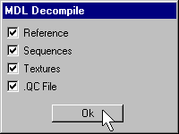

|
|
Close the Qped program as we are done with it. Select "File->New" in Milkshape 3D to clear out the model and joints that may interfere with importing of the op4 knife model. Select "Tools->Half-Life->Decompile Normal HL MDL file..." in the menu selections. Look up the "p_knife.mdl" in the "p_knife" folder on your hard drive.Click "open" to get the dialog box as in Figure 1.3. You want to have all the check boxes checked as in Figure 1.3.

Figure 1.3 Decompiling the op4 p_knife.mdl
Open the "p_knife_Reference.smd" by selecting the "File->Import->Half-Life SMD..." and you will want to have all the check boxes checked as in Figure 1.4 in the import dialog box.

Figure 1.4 Importing the op4 p_knife.mdl
|
|